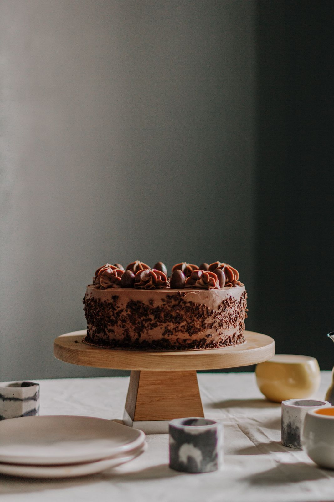

04 / La prenotazione

Almeno dieci giorni di anticipo, il numero degli invitati e un acconto del 30% al momento dell'ordine.
Ti scriviamo entro due giorni con gusto, misura e orario di ritiro. Da quel momento la data è tua.
Tieni il messaggio di conferma a portata di mano fino al ritiro.